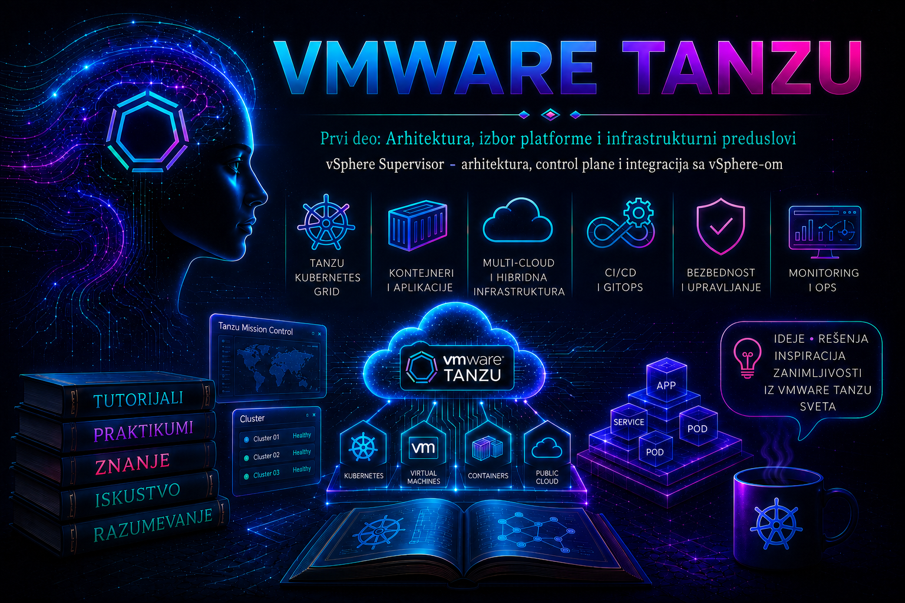

VMware & Tanzu

U prethodnoj lekciji uspostavljena je terminološka granica između vSphere Supervisor-a, vSphere Kubernetes Service-a i VKS workload klastera. Ova lekcija ulazi u arhitekturu Supervisor-a: njegov Kubernetes control plane, integraciju sa vCenter Server-om i ESXi hostovima, mrežne i storage zavisnosti, bezbednosne granice, modele dostupnosti i operativne postupke kojima administrator dokazuje da platforma radi ispravno.
Supervisor uvodi deklarativnu upravljačku ravan neposredno u vSphere okruženje. Kada ovlašćeni korisnik kroz Kubernetes API zatraži virtuelnu mašinu, persistent volume, VKS klaster ili drugi podržani resurs, kontroleri Supervisor-a prevode deklaraciju u odgovarajuće vSphere operacije. vCenter Server koordinira izvršenje, ESXi hostovi obezbeđuju compute sloj, mrežna platforma ostvaruje povezivost i load balancing, a Storage Policy Based Management usmerava podatke prema datastore-ovima koji ispunjavaju zadatu politiku.
Ovakva arhitektura daje platform timu jedinstven model upravljanja infrastrukturom, ali istovremeno povezuje dostupnost Supervisor-a sa čitavim lancem zavisnosti. Zdrav Kubernetes API zahteva funkcionalan control plane, dovoljan etcd kvorum, pouzdanu komunikaciju sa vCenter-om, ispravan DNS i NTP, dostupne mrežne i storage servise, važeće sertifikate i dovoljno slobodnih resursa za reconciliation i lifecycle operacije.
Uloga Supervisor-a u vSphere arhitekturi
Supervisor predstavlja Kubernetes zasnovanu IaaS upravljačku ravan vSphere platforme. Njegov API omogućava deklarativnu potrošnju infrastrukturnih resursa, dok vSphere zadržava odgovornost za njihovo fizičko i virtuelno izvršenje. Kubernetes objekti opisuju željeno stanje, a platformski kontroleri neprekidno usklađuju to stanje sa objektima u vCenter inventaru.
Aktiviranje Supervisor-a proširuje postojeći vSphere klaster ili skup vSphere zona Kubernetes control plane-om i komponentama potrebnim za izvršavanje Supervisor Services i podržanih workload-a. Izbor raspoloživih mogućnosti zavisi od verzije vSphere ili VMware Cloud Foundation platforme, licencnog paketa, mrežnog modela, instaliranih Supervisor Services i matrice kompatibilnosti.
Arhitektura obuhvata nekoliko međusobno povezanih ravni:
| Ravan | Komponente | Odgovornost | Glavni administrativni dokaz |
|---|---|---|---|
| vSphere upravljačka ravan | vCenter Server, Workload Control Plane servis, vSphere API i servisi identiteta | Aktiviranje, konfiguracija, praćenje i lifecycle Supervisor-a | Supervisor status, vCenter Tasks and Events, alarmi i wcpsvc.log |
| Supervisor Kubernetes control plane | API server, etcd, scheduler, controller manager i VMware kontroleri |
Prijem deklaracija, čuvanje stanja i reconciliation | API health endpoint-i, objekti, conditions, događaji i controller logovi |
| Compute ravan | ESXi hostovi, vSphere HA, DRS i resource pool-ovi | Izvršavanje control plane VM-ova i drugih workload-a | Host health, VM runtime, DRS/HA stanje, alarmi i performansne metrike |
| Mrežna ravan | VDS ili NSX, load balancer, DNS, NTP, ruteri i firewall uređaji | Management, API, workload, service i ingress komunikacija | Endpoint health, routing, MTU, firewall, TLS i load balancer stanje |
| Storage ravan | SPBM, datastore-ovi, CNS i CSI integracija | Smeštaj control plane diskova, VM diskova i persistent volume-a | Policy compliance, datastore kapacitet, latency i CNS objekti |
| Potrošačka ravan | Supervisor Namespace, VM Service, VKS i drugi Supervisor Services | Kontrolisana samouslužna potrošnja resursa | Kvote, dozvole, VM klase, storage politike, mreže i status servisa |
Ove ravni imaju različite vlasnike i izvore podataka. Kubernetes condition može pokazati da kontroler čeka resurs, dok vCenter task otkriva da je zahtev odbijen zbog storage politike, nedostatka kapaciteta ili mrežne greške. Pouzdana dijagnostika zbog toga povezuje podatke iz oba sistema u istom vremenskom intervalu.
Deklarativni model i reconciliation tok
Svaki resurs kojim upravlja Supervisor prolazi kroz deklarativni tok. Korisnik ili automatizacija šalje zahtev Kubernetes API serveru. API server proverava identitet, autorizaciju, šemu i admission pravila, zatim čuva prihvaćeno željeno stanje. Odgovarajući kontroler posmatra objekat, određuje koje vSphere operacije treba izvršiti i pokreće ih preko integracionih servisa.
Kontroler periodično upoređuje željeno i zatečeno stanje. Ako operacija još traje, status objekta sadrži prelazne conditions. Ako zavisnost nije dostupna, kontroler ponavlja pokušaj i beleži razlog čekanja ili neuspeha. Kada vSphere potvrdi uspešno izvršenje, kontroler ažurira status Kubernetes objekta.
Korisnik ili automatizacija
│
│ Kubernetes API zahtev
▼
Supervisor API server
│
├── autentikacija
├── autorizacija
├── admission kontrola
└── čuvanje željenog stanja u etcd-u
│
▼
platformski kontroler
│
│ vSphere API operacija
▼
vCenter Server ──► ESXi / mreža / SPBM / CNS / content servis
│
│ izvršno stanje
▼
status i conditions
│
└──► Supervisor APIUspešan odgovor na kubectl apply potvrđuje da je API prihvatio deklaraciju. Završetak operacije dokazuju status objekta, njegove conditions, Kubernetes događaji i odgovarajući vCenter task. Ova razlika je važna pri automatizaciji: pipeline mora da sačeka operativnu spremnost resursa umesto da uspeh HTTP zahteva tumači kao završeno provisionovanje.
Direktna promena upravljane VM u vCenter inventaru uvodi razliku između deklaracije i izvršnog stanja. Kontroler može poništiti takvu izmenu, zameniti VM ili ostati u grešci jer je promenjen objekat čiji lifecycle pripada platformi. CPU, memorija, storage, mreža i verzija upravljanih resursa menjaju se kroz podržani API ili vSphere workflow koji je vlasnik njihovog životnog ciklusa.
Supervisor control plane i njegove komponente
Supervisor control plane izvršava standardne Kubernetes komponente zajedno sa VMware kontrolerima i integracionim servisima. Njegov zadatak obuhvata prihvatanje API zahteva, čuvanje stanja, donošenje odluka o raspoređivanju, pokretanje vSphere operacija i praćenje rezultata.
| Komponenta | Funkcija | Posledica kvara | Način provere |
|---|---|---|---|
kube-apiserver |
Izlaže Kubernetes API i sprovodi autentikaciju, autorizaciju i admission obradu. | Novi zahtevi, čitanje stanja i rad kontrolera mogu postati nedostupni. | /livez, /readyz, API odziv i load balancer health |
etcd |
Čuva deklarativno stanje Supervisor-a i njegove sistemske objekte. | Gubitak kvoruma zaustavlja pouzdane upise i reconciliation. | API ready provere, platform health i Support-odobrena dijagnostika |
kube-controller-manager |
Izvršava osnovne Kubernetes kontrolne petlje. | Objekti prestaju da napreduju ka željenom stanju. | Conditions, događaji, stanje sistemskih podova i controller logovi |
kube-scheduler |
Raspoređuje podove koji pripadaju Supervisor sistemu i podržanim servisima. | Podovi ostaju u stanju Pending. |
Pod conditions, događaji i scheduler logovi |
| VMware platformski kontroleri | Prevode Kubernetes resurse u vSphere VM, storage, mrežne i klasterske operacije. | Određena grupa objekata ostaje u Provisioning, Pending ili Error stanju. |
CR conditions, događaji, wcpsvc.log i vCenter Tasks and Events |
Control plane VM-ovi predstavljaju platformski upravljane sistemske VM-ove. Njihova konfiguracija, zamena i nadogradnja pripadaju Supervisor lifecycle-u. Instaliranje dodatnog softvera, promena virtuelnog hardvera, ručno upravljanje diskovima i samostalna izmena sistemskih konfiguracija mogu ugroziti podržanost celog okruženja.
Administratorski pristup operativnom sistemu control plane VM-a koristi se u precizno određenom dijagnostičkom scenariju. Zvanični Broadcom KB ili Support zahtev treba da definiše VM, nalog, komande, očekivani nalaz i dozvoljene korektivne korake. Pre sesije se prikupljaju svi dokazi dostupni kroz vSphere Client i podržani API.
Modeli dostupnosti control plane-a
Broj control plane VM-ova i model dostupnosti zavise od verzije i izabrane arhitekture. Produkcioni HA model uobičajeno koristi tri control plane VM-a, dok VCF 9 dokumentacija za određene deployment modele opisuje i control plane sa jednim VM-om. Jedan control plane VM odgovara scenarijima u kojima su prihvatljivi jednostavnija topologija i manja otpornost; tročlani model omogućava održavanje etcd kvoruma nakon gubitka jednog člana.
U tročlanom modelu etcd zahteva najmanje dva dostupna člana. Gubitak jednog control plane VM-a smanjuje redundansu i zahteva brzu dijagnostiku. Gubitak dva člana prekida kvorum i onemogućava pouzdanu promenu stanja. Mrežna particija može imati isti efekat kao kvar VM-a, čak i kada su sva tri VM-a uključena.
Raspoređivanje VM-ova po različitim ESXi hostovima ograničava uticaj kvara jednog hosta. Zonalni Supervisor proširuje ovaj princip na tri vSphere zone, pri čemu se control plane node-ovi raspoređuju preko zona. Takav model može podneti gubitak cele zone ako su mreža, storage, load balancer i preostali kapacitet projektovani za isti failure domain.
| Model | Zaštita | Glavne zavisnosti | Administratorska provera |
|---|---|---|---|
| Jedan control plane VM | Oporavak kroz vSphere HA i platformski lifecycle | Jedan aktivni control plane, dostupnost hosta i storage-a | Prihvatljiv RTO, uspešan backup i dokumentovan oporavak |
| Tri VM-a u jednom vSphere klasteru | Kvorum nakon gubitka jednog control plane člana | Različiti hostovi, dovoljna HA rezerva, zajednička mrežna i storage dostupnost | VM-to-host raspored, DRS pravila, API health i test maintenance operacije |
| Tri-zone Supervisor | Otpornost na gubitak pojedinačne zone | Tri zone, zonalni kapacitet, mreža, load balancer i odgovarajući storage dizajn | Raspored po zonama, zonalne storage politike i test failure domain-a |
vSphere HA obezbeđuje ponovno pokretanje VM-a nakon kvara hosta. DRS održava raspored i pomaže pri evakuaciji hosta. etcd kvorum obezbeđuje konzistentnost Kubernetes stanja. Ovi mehanizmi rešavaju različite delove problema i zajedno grade dostupnost Supervisor-a.
Integracija sa vCenter Server-om i Workload Control Plane servisom
Workload Control Plane, odnosno WCP, predstavlja centralnu vCenter komponentu koja upravlja uključivanjem Supervisor-a, konfiguracionim stanjem, verzijama, nadogradnjama i integracijom sa drugim vSphere servisima. Njegov glavni log na vCenter Server Appliance-u nalazi se na putanji /var/log/vmware/wcp/wcpsvc.log.
WCP sarađuje sa servisima vCenter identiteta, sertifikata, vAPI-ja, inventara, Content Library-ja, SPBM-a, host lifecycle-a i drugim internim komponentama. Zbog toga zastoj u stanju Configuring može poticati od neaktivnog trust ili identity servisa, nedostupnog API endpoint-a, DNS greške, nevažećeg sertifikata, izgubljene interne dozvole ili neuspešnog taska na hostu.
wcpsvc.log treba čitati uz jasno definisan vremenski prozor i operation ID. Koristan postupak počinje beleženjem tačnog vremena greške u vSphere Client-u, zatim pronalazi isti opID, Supervisor identifikator ili tekst condition-a u logu. Povezani vpxd.log, vAPI i identity logovi koriste se kada WCP poruka pokazuje da je zahtev odbijen u drugom vCenter servisu.
# Izvršava se na VCSA kao ovlašćeni administratorski nalog.
# Komande samo čitaju stanje.
service-control --status --all
grep -Ei 'error|failed|timeout|forbidden|no healthy upstream' \
/var/log/vmware/wcp/wcpsvc.log | tail -n 200Prva komanda prikazuje stanje vCenter servisa. Druga daje početni filter, ali ne zamenjuje čitanje potpunog konteksta oko pronađene poruke. Restart servisa menja stanje i zahteva potvrđen uzrok, odobren change ili tačan KB postupak. Široki service-control --start --all može uticati na veliki deo vCenter funkcionalnosti i ne koristi se kao rutinski pokušaj popravke.
Integracija sa ESXi hostovima
ESXi hostovi obezbeđuju izvršno okruženje za Supervisor control plane VM-ove i druge platformski upravljane workload-e. WCP tokom aktiviranja i nadogradnje proverava kompatibilnost hostova, instalira ili ažurira potrebne komponente i prati njihovu verziju.
U dokumentaciji i logovima pojavljuje se termin Spherelet. Spherelet je VMware komponenta koja povezuje ESXi host sa Supervisor kontrolnom ravni i učestvuje u predstavljanju hosta kao Kubernetes resursa za podržane tipove workload-a. Njegova verzija prati odgovarajući Supervisor/WCP lifecycle. Nedovršena nadogradnja Spherelet komponente može ostaviti Supervisor update u stanju Pending iako su control plane VM-ovi već ažurirani.
Raspored control plane VM-ova proverava se kroz vCenter inventar. Za svaki VM beleže se ESXi host, datastore, mrežne veze, power state, alarmi, poslednje migracije i DRS pravila. Ručno vMotion premeštanje tokom aktivnog Supervisor lifecycle postupka može ometati orkestraciju; planska migracija izvodi se u skladu sa maintenance i DRS pravilima platforme.
Supervisor Namespace kao granica potrošnje i odgovornosti
Supervisor Namespace povezuje Kubernetes identitet i API objekte sa vSphere resursima. Platform administrator kroz namespace dodeljuje korisnike, kvote, storage politike, VM klase, mrežne mogućnosti, content izvore i Supervisor Services. Tim dobija kontrolisan katalog resursa koji može da koristi deklarativno.
Namespace je povezan sa odgovarajućim objektima u vCenter inventaru i resource pool hijerarhiji. Kvote ograničavaju ukupnu potrošnju CPU-a, memorije i storage-a. VM klase određuju dozvoljene hardverske profile. Storage politike određuju koje klase persistent storage-a workload može da zahteva. Dozvole određuju ko može da pregleda, kreira, menja ili uklanja resurse.
Kapacitivni proračun mora uključiti lifecycle rezervu. Rolling nadogradnja VKS klastera, zamena neuspešnog node-a ili oporavak posle kvara često zahtevaju privremeno postojanje dodatne VM. Namespace čija kvota pokriva samo trenutno stanje može biti potpuno iskorišćen upravo u trenutku kada je platformi potreban zamenski kapacitet.
| Kontrola namespace-a | Arhitektonska posledica | Dokaz ispravnosti |
|---|---|---|
| CPU i memorijska kvota | Ograničava potrošnju tima i utiče na skaliranje i rolling upgrade. | Peak proračun, trenutno korišćenje i slobodna lifecycle rezerva |
| Storage kvota i politike | Određuje kapacitet, performanse, dostupnost i cenu podataka. | Policy compliance, slobodan prostor, latency i recovery zahtevi |
| VM klase | Kontroliše veličinu i karakteristike VM i VKS node-ova. | Odobren katalog i mapiranje klasa na workload profile |
| RBAC i vSphere dozvole | Određuje administrativni domet korisnika i automatizacije. | kubectl auth can-i, pregled uloga i audit trag |
| Supervisor Services | Određuje koje dodatne API-je i operatore tim može da koristi. | Verzija servisa, status instalacije i kompatibilnost |
Mrežna arhitektura Supervisor-a
Supervisor koristi više logičkih mrežnih funkcija. Njihova konkretna realizacija zavisi od mrežnog modela i izdanja platforme. vSphere Supervisor 8 podržava NSX mrežni stack i vSphere Distributed Switch model sa podržanim load balancer rešenjem. VCF 9 uvodi sopstvene deployment modele, uključujući Foundation Load Balancer i podržane NSX/Avi arhitekture. Projektna dokumentacija mora da bude vezana za tačnu verziju i izabrani model.
Control plane VM-ovi tipično imaju management i workload mrežnu vezu. Management putanja omogućava komunikaciju sa vCenter-om, DNS-om, NTP-om i drugim infrastrukturnim servisima. Workload putanja podržava komunikaciju sa workload i servisnim mrežama u skladu sa izabranim modelom. API endpoint Supervisor-a objavljuje se preko stabilne adrese koju klijenti i vCenter koriste za Kubernetes komunikaciju.
Dual-homed control plane VM zahteva pravilno i simetrično rutiranje. Ako zahtev ulazi preko management interfejsa, a povratni saobraćaj pokušava da izađe preko workload interfejsa, reverse-path provera može odbaciti pakete. U logovima se tada mogu pojaviti martian source poruke, dok WCP prijavljuje time-out pri pristupu Supervisor API endpoint-u. Trajno rešenje usklađuje mrežni dizajn i povratnu putanju; promena kernel reverse-path filtera predstavlja privremenu i lako poništivu intervenciju koja se ne ugrađuje u produkcioni standard.
Mrežni preduslovi koje treba dokazati
- Management, workload, service i ingress CIDR opsezi ne preklapaju se međusobno niti sa postojećim infrastrukturnim mrežama.
- Control plane VM-ovi mogu da razreše vCenter PNID/FQDN pomoću DNS servera dodeljenih management mreži.
- Vreme je sinhronizovano između vCenter-a, ESXi hostova, control plane VM-ova, identity servisa i administratorskih klijenata.
- vCenter i control plane VM-ovi komuniciraju preko potrebnih portova, uključujući HTTPS i Kubernetes API putanju.
- MTU je usklađen duž cele putanje, uključujući overlay segmente kada ih mrežni model koristi.
- Load balancer health monitor proverava odgovarajući endpoint, a backend pool prati stvarno stanje control plane članova.
- IP plan sadrži rezervu za lifecycle, zamenu node-ova, dodatne servise i rast workload-a.
- Proxy, registry i Content Library putanje imaju dokumentovan DNS, routing, firewall i TLS trust.
| Simptom | Najverovatniji mrežni domen | Početna provera |
|---|---|---|
| API VIP ne odgovara nijednom klijentu | Load balancer, backend control plane ili routing | DNS, TCP 6443, TLS, pool health i control plane VM stanje |
| vCenter ne može da dosegne API, dok drugi klijenti mogu | Management putanja, firewall ili asimetrično rutiranje | Ruta između VCSA i management interfejsa control plane VM-a |
| Supervisor ne razrešava vCenter ili NSX FQDN | Management DNS | DNS serveri dodeljeni Supervisor-u i rezolucija PNID-a |
| Mali zahtevi rade, veći time-outuju | MTU ili fragmentacija | End-to-end MTU i packet capture na obe strane putanje |
| TLS greška posle zamene sertifikata | Trust chain, SAN ili vreme | Predstavljeni sertifikat, datum, issuer i klijentski trust store |
Storage arhitektura, SPBM i CNS integracija
Supervisor koristi Storage Policy Based Management kako bi infrastrukturne i korisničke zahteve povezao sa datastore-ovima koji ispunjavaju definisane mogućnosti. Storage politika može predstavljati određeni nivo performansi, dostupnosti, replikacije, enkripcije ili tipa storage sistema.
Tokom aktiviranja Supervisor-a bira se storage politika za control plane VM-ove i druge sistemske objekte koje konkretno izdanje zahteva. Supervisor Namespace zatim dobija skup storage politika koje korisnici mogu da zahtevaju. Kubernetes StorageClass objekti odražavaju dodeljene vSphere politike i omogućavaju dinamičko provisionovanje persistent volume-a.
CNS obezbeđuje vSphere pogled na container volume objekte i njihovu vezu sa Kubernetes workload-ima. CSI komponente sprovode zahteve za kreiranje, attach, detach i brisanje volume-a. Dijagnostika storage incidenta povezuje Kubernetes PVC/PV stanje, CSI događaje, CNS objekat, SPBM usklađenost, datastore kapacitet i latenciju.
Control plane zahteva stabilan i dovoljno brz storage. Visoka latency vrednost može usporiti etcd commit, API obradu i reconciliation. Potpun root disk control plane VM-a može zaustaviti kritične procese, uključujući API server i etcd. Broadcom KB postupci za čišćenje diskova vezani su za poznate uzroke, log lokacije i verzije. Brisanje datoteka bez potvrđenog postupka ugrožava dokaze i integritet platforme.
Storage kontrole za produkcioni dizajn
- Control plane storage politika ima dovoljan nivo dostupnosti za projektovani failure domain.
- Datastore kapacitet obuhvata rast control plane-a, privremene lifecycle objekte i operativnu rezervu.
- Latency alarmi se postavljaju ispod nivoa na kojem API i
etcdpostaju nestabilni. - Namespace storage kvote odvojene su od ukupnog fizičkog kapaciteta i redovno se upoređuju.
- Policy compliance se nadgleda nakon promena storage infrastrukture.
- Backup i restore zahtevi definišu zaštitu control plane-a, VKS upravljačkih objekata i aplikacionih podataka kao odvojene tokove.
Identitet, RBAC, admission i sertifikati
Pristup Supervisor API-ju prolazi kroz vSphere identity integraciju i Kubernetes autorizaciju. Korisnik se prijavljuje podržanim vSphere login tokom i dobija kubeconfig sa odgovarajućim kontekstima. Prava koja vidi unutar Supervisor-a zavise od vSphere dozvola nad namespace-om i Kubernetes RBAC pravila koja platforma iz njih izvodi ili dodeljuje.
Autentikacija potvrđuje identitet. Autorizacija proverava dozvoljenu operaciju nad konkretnim resursom i namespace-om. Admission kontrola proverava strukturu objekta, platformska ograničenja i politike. Greške iz ova tri sloja imaju različito značenje:
| Odgovor | Tumačenje | Administratorska provera |
|---|---|---|
Unauthorized |
Kredencijal nedostaje, istekao je ili ga API ne prihvata. | Kontekst, trajanje sesije, vreme, identity servis i login postupak |
Forbidden |
Identitet je potvrđen, ali nema pravo za zahtevanu operaciju. | kubectl auth can-i, namespace dozvole i RBAC vezivanja |
| Admission greška | Zahtev krši šemu, kvotu, politiku ili platformsko ograničenje. | Poruka webhook-a, kubectl explain, kvote i verzija API-ja |
x509 ili TLS greška |
Problem lanca poverenja, SAN vrednosti, roka važenja ili vremena. | Sertifikat endpoint-a, CA trust, DNS ime i NTP |
Kubeconfig se čuva kao poverljiv fajl. Njegove dozvole treba ograničiti na vlasnika, a sirov sadržaj se ne šalje u tiket, chat ili repozitorijum. Komanda kubectl config view --raw može prikazati osetljive sertifikate i tokene i zato se ne koristi pri standardnom prikupljanju dokaza.
Supervisor API, vCenter i interne komponente zavise od ispravnog TLS trust lanca. Obnova sertifikata sprovodi se zvaničnim lifecycle postupkom za tačnu verziju. Posle promene proveravaju se API endpoint, WCP komunikacija, identity servis, load balancer backend, administratorski login i VKS kontroleri.
Supervisor Services i proširenje upravljačke ravni
Supervisor Services proširuju Supervisor dodatnim Kubernetes operatorima i API-jima. Njihova instalacija donosi nove CRD objekte, kontrolere, privilegije, mrežne tokove, image izvore i lifecycle obaveze. VKS i VM Service predstavljaju ključne primere platformske potrošnje, dok konkretan katalog zavisi od izdanja i instaliranih servisa.
Pre uvođenja servisa proveravaju se podržana Supervisor verzija, zavisnosti, potrebne storage politike, registry ili content pristup, bezbednosne privilegije, upgrade putanja i način uklanjanja. Servis koji instalira privilegovani operator postaje deo trusted computing base-a Supervisor-a i zahteva istu kontrolu promena kao druga platformska komponenta.
Nadogradnja Supervisor-a i nadogradnja pojedinačnog Supervisor Service-a predstavljaju povezane lifecycle tokove. Compatibility matrica određuje dozvoljene kombinacije. Pre promene se inventarišu instalirane verzije, a posle promene proveravaju se CRD conversion, controller readiness i status svih objekata kojima servis upravlja.
Lifecycle Supervisor-a
Supervisor lifecycle obuhvata aktiviranje, patching, nadogradnju, promenu konfiguracije, obnovu sertifikata, backup, restore i kontrolisano deaktiviranje. Svaka od ovih operacija obuhvata više komponenti i zahteva dovoljno slobodnog kapaciteta.
Tokom podržane nadogradnje tročlanog Supervisor control plane-a platforma može kreirati novi control plane VM, pridružiti ga postojećem control plane-u i zamenjivati članove u kontrolisanom redosledu. Ovaj postupak zahteva raspoloživ CPU, memoriju, storage, IP adresu i funkcionalnu mrežnu putanju. Popunjena kvota ili infrastrukturni klaster bez HA rezerve mogu blokirati lifecycle iako steady-state workload trenutno radi.
Pre-upgrade kontrola
- vCenter, ESXi, Supervisor, Spherelet i Supervisor Services verzije precizno su evidentirane.
- Release notes i compatibility matrica potvrđuju dozvoljenu putanju nadogradnje.
- Supervisor, svi control plane node-ovi i ključni sistemski podovi imaju zdravo stanje.
- Nema aktivnog incidenta, neuspešnog backup-a ili nezavršenog lifecycle zadatka.
- Compute, storage i IP kapacitet pokrivaju privremeni dodatni control plane VM.
- DNS, NTP, vCenter komunikacija, load balancer i content izvori su dostupni.
- Napravljen je podržan backup i potvrđena je upotrebljivost restore procedure.
- Monitoring i change tim imaju definisane stop uslove i eskalacionu putanju.
Post-upgrade validacija
- Supervisor prikazuje ciljnu verziju i zdravo zbirno stanje.
- Control plane node-ovi su
Ready, a API/readyzprovere prolaze. - Spherelet i host komponente imaju očekivanu verziju.
- Supervisor Services i njihovi kontroleri rade u podržanim verzijama.
- Postojeći Supervisor Namespace objekti, kvote i dozvole ostali su ispravni.
- Testno kreiranje i uklanjanje bezopasnog objekta dokazuje reconciliation.
- Storage i mrežno provisionovanje rade, a novi alarmi su pregledani i objašnjeni.
Backup i oporavak Supervisor control plane-a
Od vSphere 8 Update 3 zvanična dokumentacija omogućava uključivanje stanja Supervisor control plane-a u vCenter Server file-based backup. Backup prikuplja podatke potrebne za podržani restore Supervisor stanja zajedno sa odgovarajućim vCenter oporavkom. Dostupnost i detalji postupka proveravaju se prema tačnom patch nivou.
Backup plan treba da razdvoji najmanje četiri skupa podataka:
- vCenter i Supervisor control plane stanje – štiti platformske konfiguracije i upravljačke objekte koje podržani backup obuhvata.
- Mrežna i load balancer konfiguracija – štiti eksterne zavisnosti čiji gubitak može ostaviti obnovljen control plane nedostupnim.
- VKS klasterski objekti – štiti deklarativnu topologiju i konfiguraciju workload klastera u skladu sa podržanim modelom.
- Aplikacioni Kubernetes resursi i podaci – štite se Kubernetes-aware i aplikaciono konzistentnim postupkom.
Snapshot pojedinačnih control plane VM-ova ne obezbeđuje konzistentan backup distribuiranog control plane-a. Neusklađeno vraćanje članova može obnoviti različite trenutke etcd stanja i prekinuti kvorum. Restore se izvodi prema zvaničnom redosledu i uz proveru verzije, mrežnih identiteta, sertifikata i eksternih zavisnosti.
Backup ima operativnu vrednost kada je uspešan restore potvrđen u izolovanom ili namenskom recovery okruženju. Test treba da izmeri RPO, RTO, vreme ponovnog uspostavljanja API-ja, stanje namespace-a, Supervisor Services i sposobnost daljeg upravljanja VKS klasterima.
Monitoring i dokazi zdravlja
Zbirni zeleni status u vSphere Client-u predstavlja početnu informaciju. Produkcioni monitoring prati pojedinačne indikatore koji otkrivaju degradaciju pre prekida API-ja.
| Domen | Indikator | Rizik koji otkriva |
|---|---|---|
| API | Odziv /livez i /readyz, latency i stopa grešaka |
Nedostupnost API servera ili zavisne komponente |
| Control plane | Node Ready conditions i stanje sistemskih podova | Gubitak člana, kubelet problem ili resursni pritisak |
| Storage | Root disk iskorišćenost, datastore latency i policy compliance | Pad platformskih procesa ili usporen etcd |
| Mreža | VIP health, DNS, TLS, packet loss i MTU | Delimična ili potpuna izolacija control plane-a |
| vCenter | WCP, identity, vAPI i vpxd stanje | Prekid orkestracije i autorizacije |
| Lifecycle | Trajanje reconciliation-a, pending taskovi i neuspešne zamene | Nedostatak kapaciteta ili skrivena zavisnost |
| Kapacitet | Slobodan CPU, memorija, storage i IP adrese | Nemogućnost oporavka, skaliranja ili nadogradnje |
Kubernetes događaji imaju ograničeno vreme zadržavanja i ne predstavljaju trajni audit sistem. Centralizacija logova i događaja treba da obuhvati vCenter, WCP, ESXi, mrežnu platformu, load balancer, storage i Supervisor audit zapise. Svi izvori koriste sinhronizovano vreme kako bi incident mogao da se rekonstruiše bez nagađanja.
Praktikum – mapiranje Supervisor arhitekture bez promene stanja
Poslovni i tehnički kontekst. Platform tim preuzima postojeće Supervisor okruženje čija dokumentacija ne sadrži pouzdano mapiranje control plane-a, mrežnih putanja, storage politika i odgovornosti. Pre sledećeg maintenance prozora potrebno je napraviti dokazivu početnu sliku.
Cilj. Potvrditi API kontekst, verziju i zdravlje Supervisor-a; povezati Kubernetes control plane node-ove sa VM-ovima, ESXi hostovima i datastore-ovima; evidentirati namespace kontrole, mrežne i storage zavisnosti i otvorene alarme. Vežba ne menja stanje.
Topologija. Jedan vCenter Server upravlja vSphere klasterom ili zonama na kojima je aktiviran Supervisor. Dostupni su Supervisor API endpoint, najmanje jedan Supervisor Namespace, podržani kubectl i vSphere plugin, vSphere Client i read-only pristup relevantnom inventaru.
Prava. Koristi se namenski administratorski nalog sa read-only vSphere pravima i Kubernetes pravima dovoljnim za pregled odobrenih Supervisor resursa. Nedostatak prava dokumentuje se kao nalaz.
Rizik. Komande su read-only. Glavni operativni rizik predstavlja nenamerno izlaganje kubeconfig podataka, internih endpoint-a i opsega privilegija. Dokazi se čuvaju u kontrolisanom direktorijumu i rediguju pre deljenja.
Vežba 1 – potvrda klijenta, konteksta i API endpoint-a
mkdir -p "$HOME/tashizza-lab/lesson-05/evidence"
cd "$HOME/tashizza-lab/lesson-05"
date -u +'%Y-%m-%dT%H:%M:%SZ' \
| tee evidence/collection-start-utc.txt
kubectl version --client -o yaml \
> evidence/kubectl-client-version.yaml
kubectl config get-contexts \
> evidence/kubeconfig-contexts.txt
kubectl config current-context \
| tee evidence/current-context.txt
kubectl config view --minify \
-o jsonpath='{.clusters[0].cluster.server}{"\n"}' \
| tee evidence/current-api-endpoint.txtOčekivani rezultat. Trenutni kontekst i API endpoint odgovaraju Supervisor-u. Naziv VKS workload klastera ili njegov zaseban endpoint ukazuju da je izabran drugi kontekst.
Validacija. Uporediti endpoint sa adresom prikazanom u vSphere Client-u. Komanda kubectl config view --raw se ne koristi jer može prikazati privatne ključeve, sertifikate i tokene.
Vežba 2 – provera API zdravlja i autorizacije
kubectl get --raw='/version' \
| tee evidence/supervisor-api-version.json
kubectl get --raw='/livez?verbose' \
| tee evidence/supervisor-livez.txt
kubectl get --raw='/readyz?verbose' \
| tee evidence/supervisor-readyz.txt
kubectl auth whoami 2>/dev/null \
| tee evidence/current-identity.txt || true
kubectl auth can-i get namespaces \
| tee evidence/can-get-namespaces.txt
kubectl auth can-i list nodes \
| tee evidence/can-list-nodes.txtOčekivani rezultat. /livez potvrđuje da API proces radi, dok /readyz potvrđuje da može da obrađuje zahteve uz svoje kritične zavisnosti. Pojedinačne verbose provere treba da budu uspešne.
Moguće greške. Unauthorized usmerava istragu ka kredencijalu, vremenu i identity servisu. Forbidden potvrđuje da je identitet prepoznat, ali nema traženo pravo. Time-out usmerava proveru ka DNS-u, routingu, firewall-u, load balancer-u ili nedostupnom API backend-u.
Vežba 3 – inventar control plane-a
kubectl get nodes -o wide \
| tee evidence/supervisor-nodes.txt
kubectl get nodes -o json \
> evidence/supervisor-nodes.json
kubectl get pods -A -o wide \
> evidence/supervisor-pods.txt
kubectl get events -A \
--sort-by='.metadata.creationTimestamp' \
> evidence/supervisor-events.txt
kubectl get --raw='/api/v1/nodes' \
> evidence/supervisor-nodes-api.jsonOčekivani rezultat. Svi očekivani control plane node-ovi imaju condition Ready=True. Broj node-ova upoređuje se sa izabranim modelom dostupnosti. Sistemski podovi treba da budu u očekivanom stanju, bez rastućeg broja restartovanja ili dugotrajnog Pending statusa.
Validacija u vSphere Client-u. Za svaki node pronaći odgovarajući control plane VM i zabeležiti:
- naziv i instance UUID;
- ESXi host i eventualnu zonu;
- datastore i storage policy compliance;
- management i workload mrežu;
- power state i VMware Tools/runtime status;
- aktivne alarme, poslednje migracije i DRS/HA događaje.
Kriterijum uspeha. Svaki Kubernetes node povezan je sa tačno određenim VM-om, hostom, datastore-om i mrežama. Raspored odgovara projektovanoj toleranciji na kvar.
Vežba 4 – API discovery i instalirani platformski resursi
kubectl api-versions \
| sort \
> evidence/api-versions.txt
kubectl api-resources \
-o wide \
> evidence/api-resources.txt
kubectl api-resources \
| grep -Ei 'virtualmachine|clusterclass|tanzu|vmware|storage|zone' \
| tee evidence/platform-api-resources.txtCilj provere. API discovery dokazuje koje grupe i resursi stvarno postoje u instaliranoj verziji. Rezultat služi kao osnova za izbor manifestâ, CLI postupaka i dokumentacije. Naziv proizvoda sam po sebi ne potvrđuje dostupnost određenog CRD-a.
Vežba 5 – pregled Supervisor Namespace granice
NS='<SUPERVISOR_NAMESPACE>'
kubectl get namespace "$NS" -o yaml \
> evidence/namespace.yaml
kubectl auth can-i --list -n "$NS" \
> evidence/namespace-permissions.txt
kubectl get resourcequota,limitrange -n "$NS" -o wide \
| tee evidence/namespace-quotas.txt
kubectl get storageclass \
| tee evidence/storageclasses.txt
kubectl get events -n "$NS" \
--sort-by='.metadata.creationTimestamp' \
> evidence/namespace-events.txtValidacija u vSphere Client-u. Uporediti Kubernetes namespace sa odgovarajućim vSphere Namespace objektom. Evidentirati CPU, memorijske i storage kvote, dodeljene korisnike, VM klase, storage politike, mrežne mogućnosti, content izvore i dostupne Supervisor Services.
Kapacitivna kontrola. Izračunati trenutno zauzeće, maksimalnu potrošnju i rezervu potrebnu za najmanje jednu zamensku VM tokom rolling lifecycle-a. Rezultat koji pokazuje da steady-state potrošnja koristi celu kvotu predstavlja operativni rizik.
Vežba 6 – mapa mrežnih i storage zavisnosti
Za svaku mrežnu putanju evidentirati izvor, odredište, interfejs ili segment, gateway, DNS ime, port, MTU, firewall vlasnika i očekivani smer komunikacije. Posebno dokumentovati:
- VCSA prema Supervisor API endpoint-u;
- control plane management interfejs prema vCenter PNID-u;
- control plane prema DNS i NTP servisima;
- control plane prema NSX Manager-u ili odgovarajućoj mrežnoj komponenti;
- administratorske radne stanice prema login i API endpoint-u;
- Supervisor i VKS komponente prema registry ili content izvorima.
Za storage evidentirati policy naziv i ID, kompatibilne datastore-ove, slobodan prostor, latency, policy compliance, failure domain i vlasnika backup/restore procedure.
ZAVISNOST:
Izvor:
Odredište:
DNS/FQDN:
IP/VIP:
Port i protokol:
Mreža ili segment:
MTU:
Firewall pravilo i vlasnik:
Storage politika i datastore:
Health dokaz:
Monitoring i alarm:
Recovery postupak:
Poslednji datum validacije:Kriterijum završetka praktikuma. Drugi administrator može na osnovu prikupljene dokumentacije da prati zahtev od Supervisor API-ja do vCenter taska, ESXi hosta, mrežne putanje i datastore-a. Sve nepotvrđene pretpostavke imaju vlasnika i rok provere.
Praktikum – kontrolisana validacija dostupnosti control plane-a
Kontekst. Arhitektonska dokumentacija tvrdi da Supervisor podnosi plansko održavanje jednog ESXi hosta bez prekida API dostupnosti. Tvrdnju treba dokazati u laboratoriji ili odobrenom produkcionom maintenance prozoru.
Cilj. Evakuisati jedan ESXi host kroz podržani maintenance workflow, pratiti dostupnost Supervisor API-ja i potvrditi da control plane zadržava kvorum i operativnu sposobnost.
Rizik. Ulazak hosta u maintenance mode menja stanje i pokreće migracije. Vežba zahteva odobren change, potvrđen backup, zdrav Supervisor i dovoljno kapaciteta na preostalim hostovima. Laboratorijsko ručno gašenje dva control plane VM-a ne koristi se kao HA test.
Preduslovi i stop uslovi
- Svi očekivani control plane node-ovi imaju
Ready=True. /readyz?verboseprolazi bez grešaka.- Nema aktivne nadogradnje, restore-a ili neuspešnog WCP zadatka.
- vSphere HA i DRS imaju zdravo stanje.
- Preostali hostovi imaju dovoljno CPU-a i memorije za sve evakuisane VM-ove.
- Storage i mrežna infrastruktura nemaju aktivan incident.
- Monitoring i aplikacioni timovi znaju vreme i kriterijume prekida testa.
Test se prekida ako jedan od preostalih control plane node-ova postane NotReady, /readyz počne da vraća grešku, datastore latency pređe odobren prag, DRS ne može da pronađe odredište ili se pojavi neobjašnjen kritični alarm.
Početno merenje
date -u +'%Y-%m-%dT%H:%M:%SZ'
kubectl get --raw='/readyz?verbose'
kubectl get nodes -o wide
kubectl get events -A \
--sort-by='.metadata.creationTimestamp' \
| tail -n 100Sačuvati raspored control plane VM-ova, DRS/HA stanje, datastore latency i aktivne alarme. Zabeležiti host koji se uvodi u maintenance mode i control plane VM koji se na njemu trenutno nalazi.
Kontinuirano praćenje API-ja
while true; do
printf '\n%s\n' "$(date -u +'%Y-%m-%dT%H:%M:%SZ')"
kubectl get --raw='/readyz' 2>&1
kubectl get nodes --no-headers 2>&1
sleep 15
doneKomanda se izvršava sa administratorske radne stanice i samo čita stanje. Izlaz treba usmeriti u datoteku kada predstavlja change dokaz. Prekid petlje vrši se kombinacijom Ctrl+C.
Izvršenje maintenance operacije
- U vSphere Client-u pokrenuti Enter Maintenance Mode za odabrani ESXi host.
- Koristiti podržanu migracionu opciju koja odgovara storage i DRS modelu okruženja.
- Pratiti svaki vMotion, DRS preporuku i HA alarm.
- Potvrditi da control plane VM prelazi na očekivani host i zadržava ispravno mrežno i storage stanje.
- Pratiti API health tokom cele evakuacije i najmanje petnaest minuta posle stabilizacije.
Očekivani rezultat. Supervisor API ostaje dostupan, etcd kvorum se održava, svi control plane node-ovi se vraćaju u zdravo stanje, a lifecycle kontroleri nastavljaju reconciliation.
Rollback. Ako se ispuni stop uslov, obustaviti nove migracije, izvesti host iz maintenance mode-a kroz vSphere Client i sačekati da se DRS i control plane stabilizuju. VM-ovi se ne vraćaju ručnim power operacijama. Nedostupan API aktivira incident proceduru i prikupljanje vCenter/WCP dokaza.
Kriterijum završetka. Izmereno vreme eventualne degradacije ostaje unutar SLO-a, API ne gubi operativnu dostupnost, nema trajnih alarma, a završni raspored VM-ova i slobodan kapacitet odgovaraju dizajnu.
Troubleshooting – Supervisor ostaje u stanju Configuring
Simptom. Workload Management prikazuje Supervisor u stanju Configuring. Control plane VM-ovi mogu biti uključeni, ali pojedinačne konfiguracione stavke ostaju nedovršene. Login može vraćati Bad Gateway, a WCP ponavlja reconciliation.
Obim i posledica. Problem može zahvatiti početno aktiviranje, nadogradnju ili obnovu postojeće konfiguracije. Postojeći workload-i mogu nastaviti da rade, dok nove platformske operacije ostaju blokirane.
Dijagnostički redosled
- Zabeležiti tačnu WCP condition poruku, vreme, Supervisor ID, vCenter build i poslednju promenu.
- Proveriti stanje control plane VM-ova, ESXi hostova, datastore-ova i mreža u vSphere Client-u.
- Proveriti DNS rezoluciju Supervisor API endpoint-a sa administratorske stanice.
- Proveriti TCP/TLS dostupnost endpoint-a bez isključivanja validacije sertifikata.
- Proveriti stanje vCenter servisa, posebno WCP, vAPI, identity, trust i vpxd komponenti.
- U
wcpsvc.logpronaći isti operation ID ili condition tekst. - Utvrditi da li je neuspeh lokalno u WCP-u ili predstavlja odgovor drugog servisa, mreže ili hosta.
- Primenu korekcije vezati za potvrđeni uzrok i build-specifičan Broadcom KB.
# VCSA, read-only provera servisa
service-control --status --all
# VCSA, pregled WCP poruka u relevantnom vremenskom prozoru
grep -Ei '503|502|no healthy upstream|timeout|forbidden|dns|certificate' \
/var/log/vmware/wcp/wcpsvc.log | tail -n 250Primer neposrednog uzroka. WCP dobija HTTP 503 sa vc-identity endpoint-a jer je vmware-trustmanagement servis zaustavljen. Login tok može vraćati 502, a Supervisor ostaje u Configuring stanju.
Osnovni uzrok. Potrebno je utvrditi zbog čega je servis zaustavljen: neuspešan patch, problem sertifikata, resursni pritisak, ručna promena ili šira degradacija vCenter-a.
Korektivna mera. Pokretanje potvrđeno zaustavljenog servisa izvodi se prema change proceduri ili odgovarajućem KB-u. Posle korekcije proveravaju se prestanak 503 poruka, WCP reconciliation, Supervisor health, login i API /readyz.
Troubleshooting – API endpoint je nedostupan
Simptom. kubectl vraća time-out, connection refused ili TLS grešku. vCenter može prijaviti da nema komunikaciju sa API master endpoint-om.
Dijagnostika razdvaja četiri zone kvara:
- Klijentski sloj: pogrešan kubeconfig kontekst, istekla sesija, pogrešan DNS odgovor ili lokalni proxy.
- Mrežna putanja: routing, firewall, MTU ili asimetrična putanja između klijenta, vCenter-a, load balancer-a i control plane-a.
- Load balancer: VIP postoji, ali backend pool nema zdrave članove ili health monitor koristi pogrešan endpoint.
- Control plane: API server,
etcd, node, disk ili sistemski podovi nemaju zdravo stanje.
API_FQDN='<SUPERVISOR_API_FQDN>'
API_PORT='6443'
getent hosts "$API_FQDN"
curl --connect-timeout 5 \
--cacert '<TRUSTED_CA_FILE>' \
"https://${API_FQDN}:${API_PORT}/readyz?verbose"
openssl s_client \
-connect "${API_FQDN}:${API_PORT}" \
-servername "$API_FQDN" \
-showcerts </dev/nullKomande se izvršavaju sa administratorske radne stanice. getent potvrđuje rezoluciju koju koristi operativni sistem. curl proverava TCP, TLS i API health uz eksplicitno poverenje u odgovarajući CA. openssl prikazuje predstavljeni sertifikatski lanac. Parametar -k može privremeno pomoći pri izolaciji TLS problema, ali njegov rezultat ne potvrđuje bezbedan i ispravan endpoint.
Trajna korekcija vraća ispravan DNS, simetrično rutiranje, firewall tok, MTU, load balancer pool ili control plane zdravlje. Promena klijenta kako bi ignorisao TLS ili korišćenje direktne IP adrese zaobilaze deo arhitekture i služe samo kontrolisanom testiranju hipoteze.
Troubleshooting – DNS i asimetrično rutiranje control plane VM-ova
Simptom. Control plane VM-ovi su uključeni, ali WCP prijavljuje da ne mogu da razreše vCenter PNID ili da API health zahtev time-outuje. U kernel logu control plane VM-a mogu se pojaviti martian source poruke.
Neposredni uzrok. Management DNS server ne razrešava vCenter FQDN ili se povratni paket usmerava preko workload interfejsa umesto putem kojom je zahtev ušao. Reverse-path zaštita odbacuje paket kao neispravan.
Osnovni uzrok. Mrežni plan nije obuhvatio dual-homed ponašanje control plane VM-a, vCenter se nalazi na mreži koja favorizuje pogrešan povratni interfejs ili su management DNS serveri promenjeni bez validacije iz Supervisor mreže.
Bezbedna korektivna mera. Ispraviti DNS zapis, dostupnost DNS servera ili routing tako da komunikacija između vCenter-a i control plane management interfejsa koristi simetričnu putanju. Nakon korekcije potvrditi rezoluciju, API health, prestanak novih WCP time-out poruka i prelazak Supervisor-a u zdravo stanje.
SSH pristup control plane VM-u za nslookup, dig, curl, openssl ili packet capture izvodi se isključivo prema zvaničnoj procedure za dobijanje pristupa i konkretnom KB dijagnostičkom toku.
Troubleshooting – control plane node je NotReady
Simptom. Jedan Supervisor node prikazuje NotReady, a vSphere Client navodi da node ne objavljuje status ili ne prihvata podove.
Posledica. Tročlani control plane još može održavati kvorum, ali je izgubio rezervu za naredni kvar. Nadogradnja, maintenance i druge rizične operacije odlažu se do potpunog oporavka.
kubectl get nodes -o wide
kubectl describe node '<CONTROL_PLANE_NODE>'
kubectl get pods -A -o wide \
--field-selector spec.nodeName='<CONTROL_PLANE_NODE>'
kubectl get events -A \
--field-selector type=Warning \
--sort-by='.metadata.creationTimestamp'Dijagnostičke grane.
DiskPressureusmerava proveru ka root disku, log rotaciji i datastore stanju.MemoryPressureili česta restartovanja procesa zahtevaju proveru resursnog pritiska i poznatih problema za build.- Prestanak node heartbeat-a usmerava proveru ka VM power stanju, kubelet/platform servisu, mreži i hostu.
- Više NotReady node-ova istovremeno ukazuje na zajedničku mrežnu, storage, DNS, NTP ili vCenter zavisnost.
Korektivna mera. Rešava se potvrđeni infrastrukturni ili platformski uzrok. Restart procesa, VM-a ili hosta zahteva procenu preostalog kvoruma i zvaničnu proceduru. Oporavak se potvrđuje stabilnim Ready=True stanjem, zdravim /readyz proverama i prestankom novih Warning događaja.
Troubleshooting – root disk control plane VM-a je popunjen
Simptom. API i etcd postaju nestabilni, sistemski servisi se zaustavljaju, floating IP može prestati da se dodeljuje, a disk na jednom ili više control plane VM-ova prelazi upozoravajući ili kritični prag.
Broadcom dokumentuje incidente u kojima prostor zauzimaju audit logovi, backup datoteke, neuspešna rotacija upgrade-ctl-cli logova, system journal ili napušteni image i ReplicaSet objekti. Svaka kategorija zahteva drugačiji postupak.
Prikupljanje dokaza. Zabeležiti procenat popunjenosti, filesystem, najveće direktorijume, vreme početka rasta, povezani upgrade ili backup zadatak i stanje sva tri control plane VM-a. Direktna sesija na VM-u zahteva KB/Support odobrenje.
Upozorenje. Ne brišu se aktuelni logovi, etcd podaci, container runtime sadržaj ili nepoznate datoteke. Poznata KB procedura može dozvoliti uklanjanje tačno određenih arhiviranih logova ili starih backup artefakata. Postupak se primenjuje samo na verziju i obrazac koji je potvrđen dokazima.
Trajna mera. Otkloniti neuspelu rotaciju ili izvor prekomernog logovanja, potvrditi ispravno čišćenje na svim control plane VM-ovima i uvesti alarm pre dostizanja kritičnog praga. Oporavak se dokazuje stabilnim prostorom, zdravim platformskim procesima i API readiness proverom.
Incident response tok za Supervisor
- Proglasiti simptom i obim. Navesti šta ne radi, ko je pogođen, kada je počelo i da li postojeći workload-i nastavljaju rad.
- Zaustaviti dodatne promene. Pauzirati upgrade, maintenance i automatizaciju koja može povećati broj reconciliation pokušaja.
- Sačuvati dokaze. Prikupiti UTC vreme, build-ove, poslednje promene, conditions, događaje, alarme, taskove i relevantne logove.
- Proveriti zajedničke zavisnosti. vCenter servisi, DNS, NTP, API VIP, load balancer, storage i host health proveravaju se pre pristupa pojedinačnom control plane VM-u.
- Postaviti hipotezu. Svaki predloženi uzrok mora objasniti ceo skup simptoma i vremensku korelaciju.
- Testirati najmanje invazivno. Read-only API, mrežna i log provera prethode restartu ili promeni konfiguracije.
- Primeni korekciju. Postupak mora odgovarati verziji, imati vlasnika, rollback i jasne stop uslove.
- Dokazati oporavak. Proveriti API, node-ove, WCP reconciliation, namespace-e, Supervisor Services i jednu bezopasnu lifecycle operaciju.
- Ukloniti osnovni uzrok. Ažurirati monitoring, kapacitet, mrežni dizajn, runbook ili change kontrolu.
- Dokumentovati incident. Zabeležiti neposredni i osnovni uzrok, privremenu meru, trajnu korekciju, dokaze i naučene lekcije.
Administratorske prakse
Supervisor se vodi kao kritična upravljačka ravan. Njegov SLO, monitoring, backup, restore testovi, održavanje i eskalacija definišu se sa istom ozbiljnošću kao vCenter i druga osnovna infrastruktura.
Željeno stanje menja se kroz vlasnički interfejs. Kubernetes objekti menjaju se kroz podržani API, a Supervisor konfiguracija kroz odgovarajući vSphere workflow. Upravljane VM i platformski interni objekti ostaju pod kontrolom lifecycle kontrolera.
Dokumentacija je vezana za build. Runbook navodi vCenter, ESXi, Supervisor, Spherelet i Supervisor Service verzije za koje je testiran. Posle nadogradnje postupak se ponovo validira.
Capacity planning uključuje recovery stanje. Compute, storage, IP prostor i namespace kvote pokrivaju zamenu node-a, rolling upgrade, maintenance hosta i gubitak jednog failure domain-a.
Konteksti se jasno razdvajaju. Supervisor i svaki VKS workload klaster imaju prepoznatljiva imena konteksta. Administrator proverava endpoint pre svake promene i koristi najmanju potrebnu privilegiju.
Logovi se korelišu po vremenu i operation ID-u. Kubernetes conditions i događaji povezuju se sa vCenter Tasks and Events, wcpsvc.log, vpxd.log, mrežnim, load balancer i storage dokazima.
SSH predstavlja kontrolisanu eskalaciju. Pristup control plane VM-u izvodi se prema zvaničnoj proceduri, uz incident zapis i unapred određen skup dozvoljenih komandi. Sesija služi prikupljanju dokaza i primeni potvrđene korekcije.
Backup se potvrđuje restore testom. Supervisor control plane, mrežne zavisnosti, VKS objekti i aplikacioni podaci imaju povezane, ali odvojene planove zaštite. RTO i RPO se mere u vežbi oporavka.
Promena se završava funkcionalnom validacijom. Zeleni status predstavlja jedan dokaz. Završna kontrola obuhvata API readiness, node health, reconciliation, namespace pristup, storage i mrežno provisionovanje i odsustvo novih alarma.
Završna kontrolna tačka
- Mogu da objasnim ulogu Supervisor-a kao deklarativne IaaS upravljačke ravni integrisane sa vSphere platformom.
- Mogu da pratim zahtev od Kubernetes API servera, admission i
etcdzapisa do platformskog kontrolera, vCenter taska i izvršenja na ESXi, mrežnom ili storage sloju. - Razumem funkcije API servera,
etcd-a, scheduler-a, controller manager-a, WCP-a i VMware platformskih kontrolera. - Razlikujem control plane sa jednim VM-om, tročlani HA model i zonalni Supervisor i umem da navedem granice svakog modela.
- Dokazujem raspored control plane VM-ova po hostovima ili zonama i procenjujem kvorum, HA rezervu i kapacitet za maintenance.
- Projektujem management, workload i API putanje uz simetrično rutiranje, DNS, NTP, MTU, firewall, TLS i load balancer kontrole.
- Povezujem SPBM, datastore, CNS i CSI sa control plane diskovima, namespace storage klasama i persistent volume lifecycle-om.
- Razlikujem autentikaciju, autorizaciju, admission i TLS greške i biram odgovarajuću dijagnostičku granu.
- Inventarišem Supervisor Services i proveravam njihove verzije, privilegije, zavisnosti i upgrade kompatibilnost.
- Izvodim read-only mapiranje arhitekture i kontrolisanu proveru dostupnosti jednog failure domain-a sa stop uslovima i rollback-om.
- Sistematično dijagnostikujem
Configuring, nedostupan API, DNS/routing problem,NotReadynode i popunjen control plane disk. - Razdvajam neposredni uzrok, osnovni uzrok, privremenu meru i trajnu korekciju i dokazujem oporavak funkcionalnom validacijom.
- Planiram podržan backup i restore Supervisor control plane-a i odvojenu zaštitu VKS i aplikacionih podataka.
Zaključak
vSphere Supervisor povezuje Kubernetes deklarativni model sa vSphere infrastrukturom. API server prihvata zahtev, etcd čuva željeno stanje, platformski kontroleri pokreću vSphere operacije, a vCenter, ESXi, mrežni i storage servisi obezbeđuju njihovo izvršenje. Status i conditions vraćaju rezultat u Kubernetes model i omogućavaju automatizaciji da prati napredovanje resursa.
Dostupnost Supervisor-a nastaje zajedničkim delovanjem control plane kvoruma, vSphere HA i DRS mehanizama, pravilnog rasporeda po failure domain-ima, pouzdane mreže, stabilnog storage-a, funkcionalnih vCenter servisa i dovoljne lifecycle rezerve. Svaka od ovih zavisnosti ima poseban izvor dokaza i sopstvenu dijagnostičku granu.
Administrator Supervisor-a upravlja celim kontrolnim lancem. On poznaje granice vlasništva, čuva upravljane objekte od ručnih intervencija, vezuje postupke za tačnu verziju, prikuplja dokaze pre promene i završava incident proverom API-ja, reconciliation-a i infrastrukturnih servisa. Takav operativni model priprema čitaoca za sledeću lekciju, u kojoj se arhitektura VKS workload klastera razmatra kao zasebna upravljačka ravan sa sopstvenim control plane-om, worker node-ovima, Cluster API objektima i životnim ciklusom.